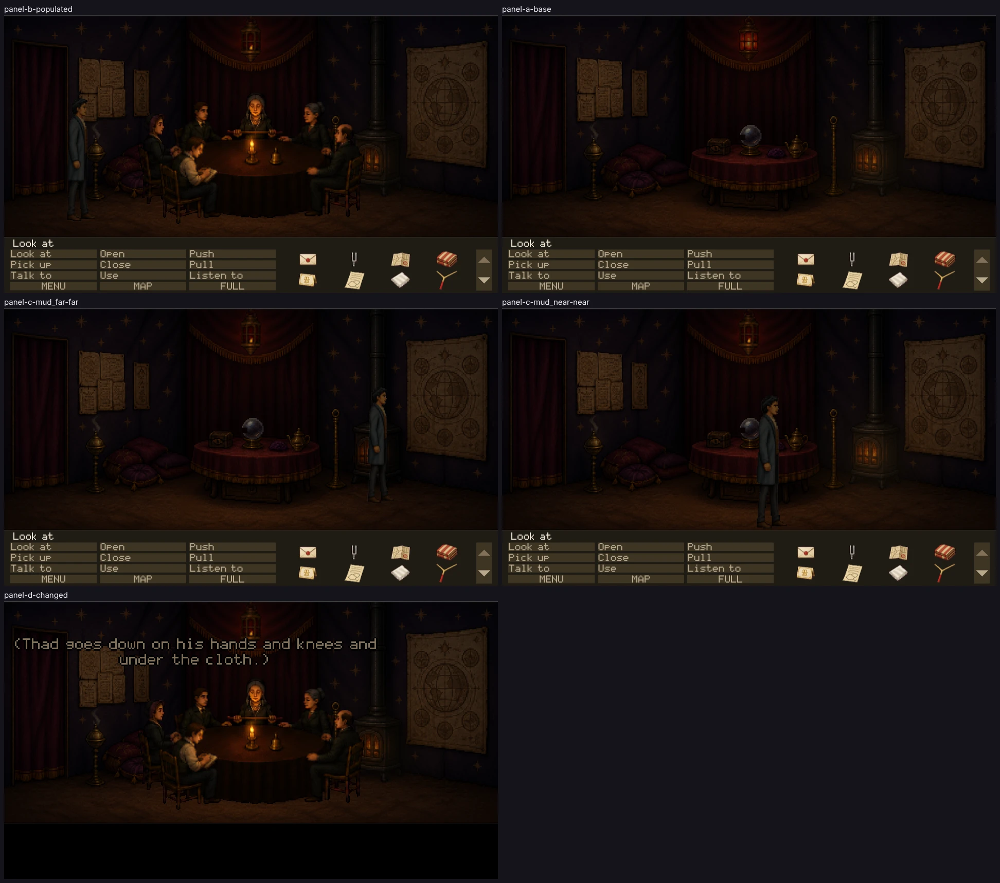

ozymandias_tent — four-panel live-runtime proof
Every frame below is the full play area as the renderer drew it, in the running
game, at ec9c25f0 on seance-polish.
No crop, isolated sprite or source image appears here: those are for diagnosing what a full
frame has already shown.
These panels establish technical admissibility only. Nothing here says the
art is good, in style, funny or approved. Only Tyler sets visual_accepted.

THE COMMITTED SHEET Every panel, complete, at
50% —
downscaled, never cropped. The full-resolution captures are reproducible test artifacts
and are not in git; their hashes are below.
PASS — technically admissible
PANEL B — normal populated state
room ozymandias_tent · camera 0 ·
flags T_OPENING_SAID T_COACH_DEPARTED T_UNDERTAKER_NAMED T_HOB_CROSSING T_THAD_LEAVING T_HOB_SPOKEN T_HOB_GONE T_PIKE_DEAD T_OPENING_DONE T_SEEN_MAIN_STREET T_TUNES_PIANOS T_SWINDLED T_CASE_DOWN T_CASE_TAKEN T_BORDERS_MOTT T_ASSAY_QUEUE T_NO_MOTT_GOLD T_SECOND_LEDGER T_VESSEL_OPENED T_OFFICE_TOPIC T_VESSEL_FOUND T_GULCH_TRIP T_GULCH_HOME T_ROD_HIRED T_DUEL_ONE_LOST T_DUEL_TWO_WON T_ASSAY_ADJOURNED ASSAY_PAIR_01 ASSAY_PAIR_02 ASSAY_PAIR_03 ASSAY_PAIR_04 ASSAY_PAIR_05 ASSAY_PAIR_06 ASSAY_PAIR_07 ASSAY_PAIR_08 ASSAY_PAIR_09 ASSAY_PAIR_10 ASSAY_PAIR_11 ASSAY_PAIR_12 ASSAY_PAIR_13 ASSAY_PAIR_14 ASSAY_PAIR_15 ASSAY_PAIR_16 ASSAY_PAIR_17 ASSAY_PAIR_18 ASSAY_PAIR_19 ASSAY_PAIR_20 ASSAY_PAIR_21 ASSAY_PAIR_25 ASSAY_PAIR_26 T_VESSEL_GREETED T_SURVEY_NEEDED T_DEED_LODGED T_SURVEY_LODGED T_OZY_GREETED T_PANNER_GREETED T_FRAME_MET T_NINETY_DAYS T_SUMP_DOCUMENTS_HEARD T_MOTT_FACE_UNKNOWN T_FANSHAWE_FUNERALS T_MEMORIAL_BOOKED T_VESSEL_LOCATION T_DINED T_CLAIM1_BLANK T_EXCAVATION_CLAUSE T_QUEUE_PADDED T_EMPTY_OFFICE_SEEN T_SEANCE_ON T_SEANCE_ARRIVED T_SEANCE_DARK T_HUM_HEARD T_GRIEVANCE_MOTT T_BLANKET_BORROWED T_OZY_ASKED T_OZY_PAID T_SOW_FUNERAL_ASKED T_SHENG_TASK T_PRATT_TRAIL T_ROOM_GRANTED T_WARM_HOLE T_PRATT_PAID T_PRATT_TURNED T_PRATT_STAKE T_PRATT_JUMP_SEEN T_PRATT_JUMP_HEARD T_PRATT_SWEARS T_SEEN_CLAIMS_ROAD T_SHENG_HOLDS_PAPER T_SHENG_PAPER_HEARD T_ASSAY_ASKED T_ASSAY_BACK T_ASSAY_RETURNED T_ATTESTED T_PLATE_AT_GATE T_LINEN_COLLECTED T_CUTAWAY_CLARION T_CUTAWAY_PRATT T_CUTAWAY_FANSHAWE T_WASHOUT_SEEN T_MINE_ENTERED T_MINE_CROSSED T_LEDGE_SEEN T_CAMP_TRUSTS T_DEACON_FOUND T_PLANK_SEAT T_GROG_SEEN T_GULCH_MESSAGE_UP T_GULCH_MESSAGE_DOWN ·
inventory letter tuning_fork company_map blanket invitation third_copy handkerchief brass_rod padded_log photograph document_b document_d document_a watch document_c deed
thad @300,800 479px sprite
PANEL A — base state, cast suppressed
room ozymandias_tent · camera 0 ·
flags T_OPENING_SAID T_COACH_DEPARTED T_UNDERTAKER_NAMED T_HOB_CROSSING T_THAD_LEAVING T_HOB_SPOKEN T_HOB_GONE T_PIKE_DEAD T_OPENING_DONE T_SEEN_MAIN_STREET T_TUNES_PIANOS T_SWINDLED T_CASE_DOWN T_CASE_TAKEN T_BORDERS_MOTT T_ASSAY_QUEUE T_NO_MOTT_GOLD T_SECOND_LEDGER T_VESSEL_OPENED T_OFFICE_TOPIC T_VESSEL_FOUND T_GULCH_TRIP T_GULCH_HOME T_ROD_HIRED T_DUEL_ONE_LOST T_DUEL_TWO_WON T_ASSAY_ADJOURNED ASSAY_PAIR_01 ASSAY_PAIR_02 ASSAY_PAIR_03 ASSAY_PAIR_04 ASSAY_PAIR_05 ASSAY_PAIR_06 ASSAY_PAIR_07 ASSAY_PAIR_08 ASSAY_PAIR_09 ASSAY_PAIR_10 ASSAY_PAIR_11 ASSAY_PAIR_12 ASSAY_PAIR_13 ASSAY_PAIR_14 ASSAY_PAIR_15 ASSAY_PAIR_16 ASSAY_PAIR_17 ASSAY_PAIR_18 ASSAY_PAIR_19 ASSAY_PAIR_20 ASSAY_PAIR_21 ASSAY_PAIR_25 ASSAY_PAIR_26 T_VESSEL_GREETED T_SURVEY_NEEDED T_DEED_LODGED T_SURVEY_LODGED T_OZY_GREETED T_PANNER_GREETED T_FRAME_MET T_NINETY_DAYS T_SUMP_DOCUMENTS_HEARD T_MOTT_FACE_UNKNOWN T_FANSHAWE_FUNERALS T_MEMORIAL_BOOKED T_VESSEL_LOCATION T_DINED T_CLAIM1_BLANK T_EXCAVATION_CLAUSE T_QUEUE_PADDED T_EMPTY_OFFICE_SEEN T_SEANCE_ON T_SEANCE_ARRIVED T_SEANCE_DARK T_HUM_HEARD T_GRIEVANCE_MOTT T_BLANKET_BORROWED T_OZY_ASKED T_OZY_PAID T_SOW_FUNERAL_ASKED T_SHENG_TASK T_PRATT_TRAIL T_ROOM_GRANTED T_WARM_HOLE T_PRATT_PAID T_PRATT_TURNED T_PRATT_STAKE T_PRATT_JUMP_SEEN T_PRATT_JUMP_HEARD T_PRATT_SWEARS T_SEEN_CLAIMS_ROAD T_SHENG_HOLDS_PAPER T_SHENG_PAPER_HEARD T_ASSAY_ASKED T_ASSAY_BACK T_ASSAY_RETURNED T_ATTESTED T_PLATE_AT_GATE T_LINEN_COLLECTED T_CUTAWAY_CLARION T_CUTAWAY_PRATT T_CUTAWAY_FANSHAWE T_WASHOUT_SEEN T_MINE_ENTERED T_MINE_CROSSED T_LEDGE_SEEN T_CAMP_TRUSTS T_DEACON_FOUND T_PLANK_SEAT T_GROG_SEEN T_GULCH_MESSAGE_UP T_GULCH_MESSAGE_DOWN ·
inventory letter tuning_fork company_map blanket invitation third_copy handkerchief brass_rod padded_log photograph document_b document_d document_a watch document_c deed
thad @300,800 479px sprite
PANEL D — principal changed state: USE THE SÉANCE TABLE in the dark (doc 111): T_UNDER_TABLE. Visible consequence: his direction going under the cloth over the dark tent, Thad no longer drawn (the tent's actorHiddenWhen), and no list of options under the line: SEA_E1 is owed until the lines and THE SÉANCE have been read (errata 239).
room ozymandias_tent · camera 0 ·
flags T_OPENING_SAID T_COACH_DEPARTED T_UNDERTAKER_NAMED T_HOB_CROSSING T_THAD_LEAVING T_HOB_SPOKEN T_HOB_GONE T_PIKE_DEAD T_OPENING_DONE T_SEEN_MAIN_STREET T_TUNES_PIANOS T_SWINDLED T_CASE_DOWN T_CASE_TAKEN T_BORDERS_MOTT T_ASSAY_QUEUE T_NO_MOTT_GOLD T_SECOND_LEDGER T_VESSEL_OPENED T_OFFICE_TOPIC T_VESSEL_FOUND T_GULCH_TRIP T_GULCH_HOME T_ROD_HIRED T_DUEL_ONE_LOST T_DUEL_TWO_WON T_ASSAY_ADJOURNED ASSAY_PAIR_01 ASSAY_PAIR_02 ASSAY_PAIR_03 ASSAY_PAIR_04 ASSAY_PAIR_05 ASSAY_PAIR_06 ASSAY_PAIR_07 ASSAY_PAIR_08 ASSAY_PAIR_09 ASSAY_PAIR_10 ASSAY_PAIR_11 ASSAY_PAIR_12 ASSAY_PAIR_13 ASSAY_PAIR_14 ASSAY_PAIR_15 ASSAY_PAIR_16 ASSAY_PAIR_17 ASSAY_PAIR_18 ASSAY_PAIR_19 ASSAY_PAIR_20 ASSAY_PAIR_21 ASSAY_PAIR_25 ASSAY_PAIR_26 T_VESSEL_GREETED T_SURVEY_NEEDED T_DEED_LODGED T_SURVEY_LODGED T_OZY_GREETED T_PANNER_GREETED T_FRAME_MET T_NINETY_DAYS T_SUMP_DOCUMENTS_HEARD T_MOTT_FACE_UNKNOWN T_FANSHAWE_FUNERALS T_MEMORIAL_BOOKED T_VESSEL_LOCATION T_DINED T_CLAIM1_BLANK T_EXCAVATION_CLAUSE T_QUEUE_PADDED T_EMPTY_OFFICE_SEEN T_SEANCE_ON T_SEANCE_ARRIVED T_SEANCE_DARK T_UNDER_TABLE T_HUM_HEARD T_GRIEVANCE_MOTT T_BLANKET_BORROWED T_OZY_ASKED T_OZY_PAID T_SOW_FUNERAL_ASKED T_SHENG_TASK T_PRATT_TRAIL T_ROOM_GRANTED T_WARM_HOLE T_PRATT_PAID T_PRATT_TURNED T_PRATT_STAKE T_PRATT_JUMP_SEEN T_PRATT_JUMP_HEARD T_PRATT_SWEARS T_SEEN_CLAIMS_ROAD T_SHENG_HOLDS_PAPER T_SHENG_PAPER_HEARD T_ASSAY_ASKED T_ASSAY_BACK T_ASSAY_RETURNED T_ATTESTED T_PLATE_AT_GATE T_LINEN_COLLECTED T_CUTAWAY_CLARION T_CUTAWAY_PRATT T_CUTAWAY_FANSHAWE T_WASHOUT_SEEN T_MINE_ENTERED T_MINE_CROSSED T_LEDGE_SEEN T_CAMP_TRUSTS T_DEACON_FOUND T_PLANK_SEAT T_GROG_SEEN T_GULCH_MESSAGE_UP T_GULCH_MESSAGE_DOWN ·
inventory letter tuning_fork company_map blanket invitation third_copy handkerchief brass_rod padded_log photograph document_b document_d document_a watch document_c deed
thad @440,800 479px sprite
PANEL C — mud_far far, authored y756
expected 449px · runtime 449px ·
silhouette 450px, bottom y756
art/actors/thad-idle-right/idle-01.png
PANEL C — mud_near near, authored y857
expected 518px · runtime 518px ·
silhouette 519px, bottom y857
art/actors/thad-idle-right/idle-05.png